*** NOTE: the instructions and screenshots below refer to Navigatrix version 0.5 (ISO downloaded in or after July 2013). For instructions on how to install the earlier 0.4 version of Navigatrix please see here. ***
This section explains how to install Navigatrix from a bootable USB stick, SD card or DVD as well as configuring Navigatrix for different languages.
Installing Navigatrix onto the Hard Disk
Once you have a bootable USB stick/SD card or DVD with Navigatrix (see “Getting Navigatrix”), installing it to your harddisk is straight forward. You can install Navigatrix alongside your current operating system, choosing between Navigatrix and your current system when you boot your computer.
First, boot Navigatrix from your USB stick/SD card. You may have to press some function key while the computer starts up in order to tell it to boot from a USB device rather than the hard disk. Most computers will display something like “Press <F2> to enter setup” for a few seconds on the bottom of the screen before the operating system starts booting. Once Navigatrix is up and running you will a screen that looks like this:
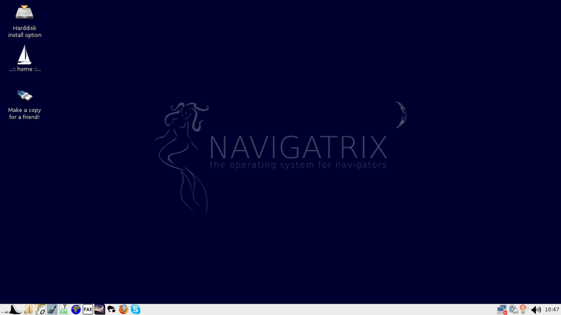
You can use the system as is, running from the USB device. The interface logic is similar to Windows XP or later: You launch applications by clicking on the little Manta symbol in the bottom-left of the screen (see “The Applications” for details on what you will find under the Manta Menu).
Once you decide to install Navigatrix to your harddisk (it will run and boot much faster compared to the USB stick), double-click on the “Harddisk install option” in the top-left of the desktop:
This will launch a set-up program that will take you through the installation process.
The first screen will ask you about the language in which you want to run the installation. Note: this is not the language that Navigatrix will run in once it is installed but simply the langauge for the installation dialogue.
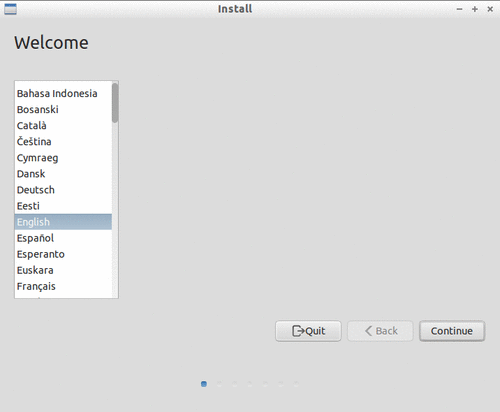
Next comes a check whether the pre-requisites for an installation are met on your system.
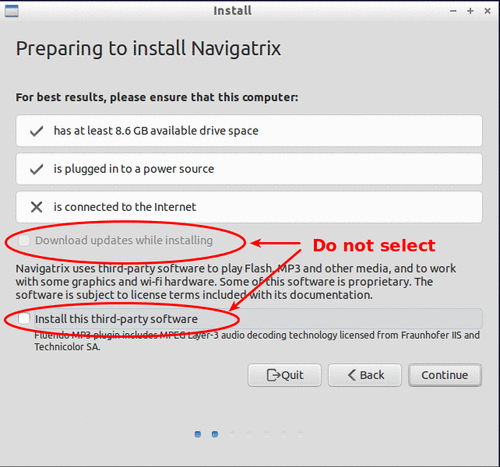
Do not select the options Download updates while installing and Install this third-party software on this form. These updates are not required for running Navigatrix and they are likely to do more harm than good if selected. In addition to using up potentially scarce network bandwith for the download, an uncontrolled blanket update may lead to individual components of Navigatrix no longer working smoothly together. The versions of the various pieces of software that together make up Navigatrix have been carefully chosen to make these pieces work together and interface with external devices such as GPS, Pactor, and AIS. For software “newer” often does not mean “better” when it comes to reliability. If required you can update individual components of the system after the installation has completed.
If you are in range of a wireless network you will next be asked whether you want to connect to that network during the installation. For the reason stated above, do not connect to this network during installation (in fact if you have a wired network connection you may want to disconnect it during the installation - just to be on the safe side...).
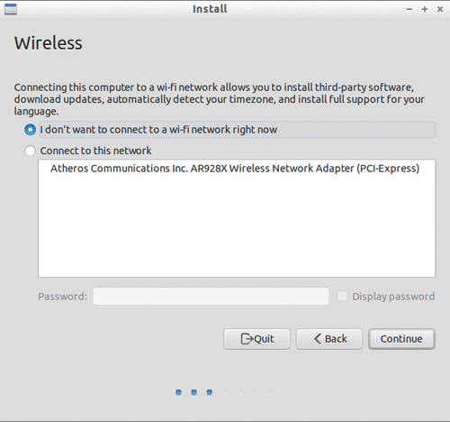
Now we get into the thick of things, defining how and where Navigatrix is to be installed.
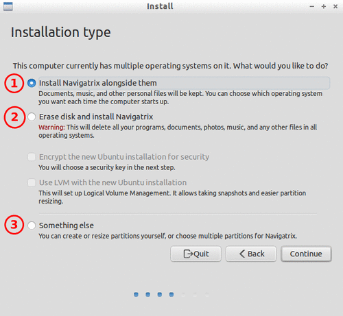
The easiest case is to have the set-up program wipe your hard drive and install Navigatrix as the only operating system on your computer (option 2 in the image above). However, in most cases you will want to install Navigatrix alongside an existing operating system (e.g. Windows or another Linux distribution) and to choose at each boot which operating system you want to run. This can be done with options 1 and 3 in the image above. Option 1 will automatically create a new partition on your hard drive into which Navigatrix will be installed. Under option 3 you can choose into which existing partition(s) Navigatrix is to be installed. In this case you can also place different branches of the file system into different partitions. For example, you can put the directory tree under /home into a seperate disk partition which makes updating to a new version of Navigatrix in the future easier (you will only have to replace the system files with the new version but keep all your data and configuration files under /home).
Note: If option 1, “Install Navigatrix alongside them” appears greyed out (inactive) please see Special Cases at the end of this page.
Following we will first describe the installation with the simpler option 1 above. This is sufficient for computers with only one existing operating system. If you already have more than one operating system on your computer and/or you are familiar with setting up and managing partitions on your hard drive you should choose option 3 which will be described further down.
Let's start with option 1, “Install Navigatrix alongside them”. With this option the only thing you will have to do is to specifiy how much hard disk space you want to dedicate to Navigatrix:
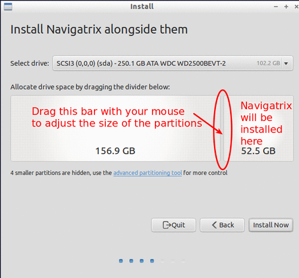
As shown in the image above, you can drag the bar that separates the exisiting hard disk partition from the one to be created for Navigatrix. Moving this bar will adjust the size ratio between the two partitions. If you plan to leave your music, image, and video files on your existing partition, 40-50GB should be a generous allowance for Navigatrix to accommodate charts, email, a digital library, a compressed off-line version of wikipedia, and other application data. If in doubt do a quick sanity check based on your expected requirements. The Navigatrix operating system (including pre-installed applications) will occupy about 6GB, leaving the remainder of the partition for user data (incl. charts, email, etc.) and additional applications you may want to install. You will be able to access files in an exsiting Windows partition from Navigatrix but not the other way around - you won't be able to access files stored in the new Navigatrix partition from Windows.
Under option 1, “Install Navigatrix alongside them”, this all you will have to do here and you can continue with step 4 below. If you chose option 3, “Something else” above there are a few more things to do.
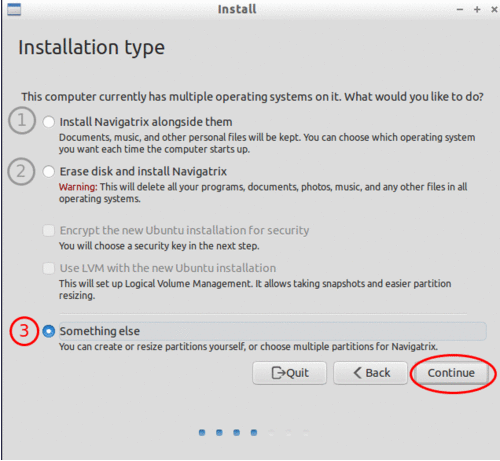
If you want to go down this road it is best to set up the required partitions before you start the installation procedure. You can use GParted which comes with Navigatrix (available under Manta menu -> Preferences -> Partition Editor). We assume that someone choosing option 3 will be familiar with these tools. Alternatively, you can refer to GParted's comprehensive “Help” documentation and this post on the Navigatrix Support Discussion Board provides some good pointers as well.
A typical Navigatrix installation under option 3 may use three partitions:
One partition of about 10GB to accommodate the operating system and pre-installed applications. This includes some reserve in case you later choose to install additional applications. Choose “ext4” as the file system for this partition.
A swap partition to which memory operations can be off-shored if your computer runs out of RAM. Setting up this partition is only required if you don't already have an existing linux-swap partition on your har disk (will be visible as such in GParted). 4GB for this swap-partition should be a generous allowance.
The remaining available hard disk capacity can be used for a partition for the home directory in which user files and user specific configuration data will be stored. This partition should also be set up as an “ext4” file system.
Note: Most PC-type computers will only allow a maximum of four primary partitions on a hard drive. You can get around this limitation by setting the fourth partition up as an extended partition which can then house many more logical partitions. See this post on the Navigatrix Support Discussion Board for some practical pointers.
Separating the home directory from the rest of the system as described above will come in handy if you ever want to upgrade to a new version of Navigatrix in the future. You will then only have to drop the new system into the first of the three partitions listed above while retaining all your user and configuration files under home in a separate partition.
Once you have set up the required partitions and selected Something else in the form above, you will see the following dialogue:
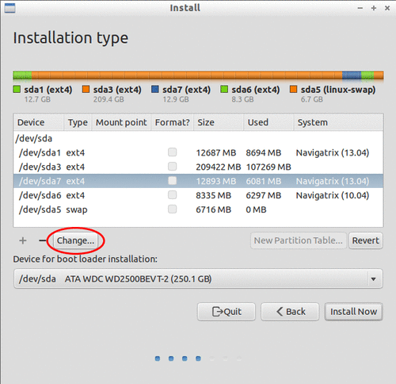
Here you define into which partition(s) the various pieces of the system should be installed. Pick the relevant partition under “Device” and click on the Change... button below the device listing. This will open another dialogue window in which you can define the settings for each partition:
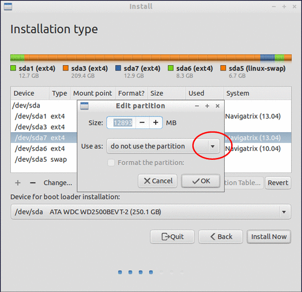
If the partitions were already set up and sized correctly, you can leave the size unchanged. Just click on the Use as drop-down arrow and select Ext4 journaling file system. Selecting the file system type will open another field labeled “Mount point”.
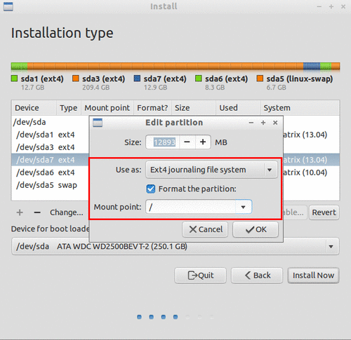
Click on the drop-down arrow next to the Mount point field and select which branch of the file system should be installed into this partition. Select the root directory (“/”) for the operating system including pre-installed applications. For your home directory select “/home”. If required you can also choose to format these partitions. Don't format a home partition that has data you wish to retain!
Once you made your selections you will see a warning that these changes will have to be written to disk before proceeding. Click on Continue. Once you're done with specifying your desired set-up click on Install now.
Next, you will be asked about your keyboard layout. Test that your choice works correctly by typing a few special characters in the box at the bottom of the screen. This is important as you will later be asked to choose a password. If you enter your choice of password with the installer assuming a different keyboard layout, you may not be able re-create the password later.
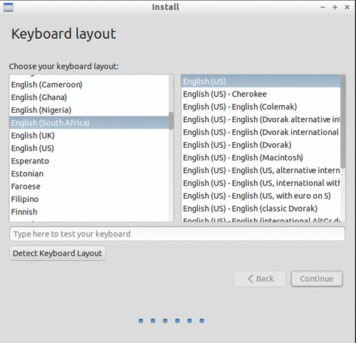
A question about your location is next in order to set time zone and number/date formats correctly (you can change these later under Manta -> Preferences -> Time and Date and Manta -> Preferences -> Language Support).
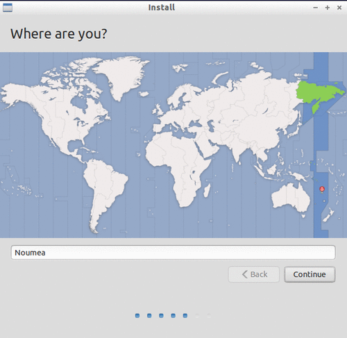
Next, you will be asked to choose a user name and password.
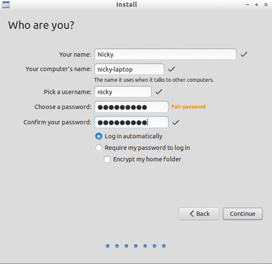
It is important to remember the password that you enter in this step (even if you choose “Log in automatically”). There are some operations on a Unix/Linux system that will require you to authenticate yourself as “root” user (think “administrator” in Windows Vista and later versions) and will ask for this password (for example, when you want to install additional software).
That's all. Once you clicked “Continue” on the previous form the installer will do it's magic - which may take a moment or two. Once it's done you'll see a confirmation message.
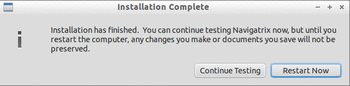
Note: If you want to start Navigatrix from your hard disk right away, first shutdown with your USB stick/SD card still plugged in. Unplug the device once the computer has shutdown, and then restart it from the harddsik. If you click “Restart” in the previous dialogue you may mess up the file system on your USB stick/SD card if you unplug it while your computer is still running Navigatrix off it.
The next time you boot from your harddisk you should see the boot loader displaying a selection menu that allows you to choose which operating system you want to boot (Navigatrix or whatever you were running up to now). See here if the boot loader fails to display your old operating system as a choice.
Enjoy!
Changing the Default Language for Navigatrix
After you have installed Navigatrix on your hard disk you can change the default language for the user interface by following the instructions in this post on the Navigatrix Support Discussion Board. Version 0.5 of Navigatrix already comes complete with English, Spanish, French and -as of September 2013- German language packs. For these languages you won't have to download any additional packages and can simply re-arrange the preference order for the languages as described in the Discussion Board post. For other languages you will have to download the relevant langauge packages (dictionaries, thesaurus, ...) first (also decribed in the Discussion Board post).
Notes on Special Cases
Installer does not offer "side by side" installation of Navigatrix alongside an existing operating system
Depending on how your harddisk has been partitioned prior to isntalling Navigatrix you may not see the "Install them side by side" option in step 4 above. On "traditional" harddisks used for Windows-equipped computers, the partition scheme only allows a maximum of four so called “primary partitions”. If your harddisk already has four partitions then the Navigatrix installer will be unable to create another partition for Navigatrix. In this case the dialogue above would look like this (note that the screenshot below is still from the 0.4 version of Navigatrix but the essence hasn't changed with version 0.5):
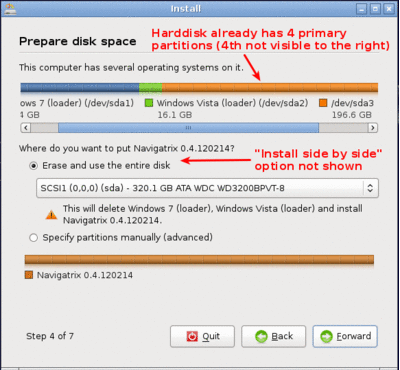
If you select “Specify partitions manually (advanced)” in the window above you can actually see the four partitions listed as in the example below:
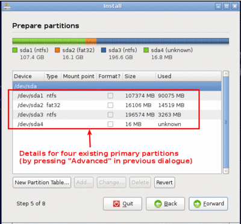
In this case quit the installation process. You will have to re-shuffle your partitions prior to installing Navigatrix in order to get around the four partition limitation. The way to do this is to first delete the last of the existing primary partitions (after backing up all the data from that partition to restore it later). In its place you then create what is called an "extended partition". This extended partition is simply a container in which you can fit additional partitions as needed. From "the outside" it still looks like four partitions - in line with the maximum - but with one of them (the "extended" one) being able to house additional partitions, you can in effect get around the four-partition limit.
This may sound complicated but is in fact pretty straight forward if you work carefully and make sure you have backed up the data from any partitions you change during this process. Navigatrix comes with a tool that allows you to delete, resize, move and create partitions on you harddisk. You can find it in the Manta Menu under Preferences->Partition Editor:
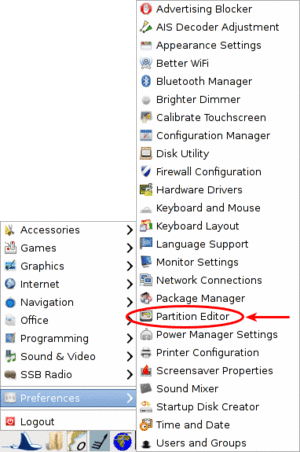
Also check out this post on the Navigatrix Support Discussion Board for more info and some practical pointers.
Running Navigatrix on newer hardware (2011+)
Starting in 2011, an increasing portion of new computers are shipped with a “next generation BIOS” called “UEFI”, the Unified Extensible Firmware Interface. Originally introduced by Intel as EFI, UEFI is simply a newer version of EFI and you see the two abbreviations used interchangeably. Among other things, the boot process under EFI is different from traditional BIOS booting. While Navigatrix version 0.5 will run on (U)EFI machines, you may have trouble installing it in "Dual Boot" mode alongside another operating system. See this post on the Navigatrix discussion board for further details.
GRUB Boot Manager does not show Windows option in boot selection menu
When you install Navigatrix alongside Windows (choosing option 1, “Install Navigatrix alongside” in step 3 above) it will also install “GRUB” the “Grand Unified Boot Loader/Manager”. GRUB installs itself into your systems “Master Boot Record” (or it's UEFI/GPT equivalent if you have a new computer that shipped with Windows 8). When your computer now boots it launches GRUB rather than an operating system. GRUB then asks you which operating system you actually want to boot (Windows or Navigatrix) and launches the operating system of your choice.
There have been cases where - once you reboot your computer after installing Navigatrix - GRUB only shows a single entry for Navigatrix as a boot option and entry for Windows. Should you encounter this issue it can easily be fixed via the GRUB Customizer which is available (with installation instructions) here: http://navigatrix.net/viewtopic.php?p=1200#p1200. Download the package, install it under Navigatrix on your harddrive, and then launch it from the Manta Menu under Preferences->Grub Customizer.
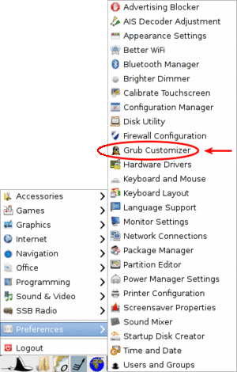
To launch the GRUB Customizer you will have to enter the password which you set up during the installation. Once the GRUB Customizer is up, it will automatically scan your harddisk for bootable operating systems. When that is completed it should show entries for Navigatrix and Windows (plus some other stuff like “memtest” which you can ignore at this point). Simply press “Save” and exit the GRUB Customizer. The next time you boot, the GRUB selection menu should give you a choice between Navigatrix and Windows.